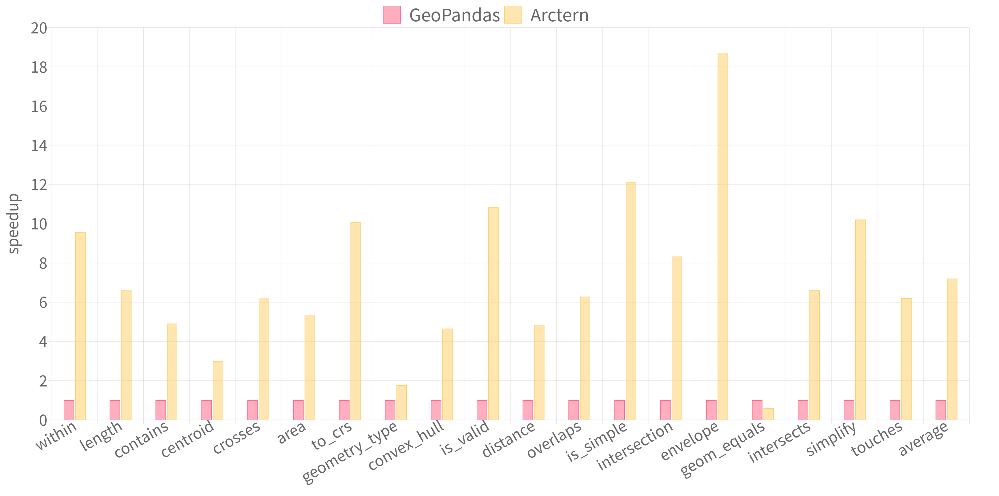

Welcome to Arctern Documentation¶
Arctern is a fast scalable spatial-temporal analytics framework.
Scalability is key to building productive data science pipelines. To address the scalability challenge, we launched Arctern, an open-source spatial-temporal analytic framework for boosting end-to-end data science performance. Arctern aims to improve scalability from two aspects:
Unified data analytic and processing interface across different platforms, from laptops to clusters and cloud.
Rich and consistent algorithms and models, including trajectory processing, spatial clustering, and regression, etc., across different data science pipeline stages.
We adopt GeoPandas‘s interface and plan to build the GeoDataFrame and GeoSeries that scale both up and out. On top of GeoDataFrame/GeoSeries, we will develop a consistent spatial-temporal algorithm set across execution environments.
We have now developed an efficient multi-thread GeoSeries implementation, and the distributed version is in progress. In the latest version 0.2.0, Arctern achieves 7x speedup against GeoPandas. The detailed evaluation results are illustrated in the figure below.
We are also conducting experimental GPU acceleration for spatial-temporal data analysis and rendering. By now Arctern provides six GPU-accelerated rendering methods and eight spatial-relation operations, which outperform their CPU-based counterparts with up to 36x speedup.
In the next few releases, our team will focus on:
Developing a distributed version of GeoSeries. Our first distributed implementation of GeoDataFrame/GeoSeries will be based on Spark. It is developed in sync with Spark 3.0 since its preview release. Spark's supports on GPU scheduling and column-based processing is highly in line with our idea of high-performance spatial-temporal data processing. Besides, the introduced Koalas interface offers a promising option for implementing consistent GeoDataFrame/GeoSeries interfaces on Spark.
Enriching our spatial-temporal algorithm sets. We will concentrate on KNN search and trajectory analysis in the project's early stages.